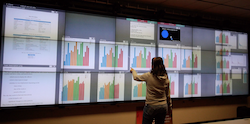

Research projects
New research project to explore visualization approaches that can help domain scientists understand the process and products of deep learning methods on cancer biology data, and help machine learning researchers tune and refine these methods.

Articulate: Designing conversational interfaces for visual data analysis
Exploring design challenges of developing a conversational interface for visual data exploration and prototyping an application to take spoken inputs and generate visualization responses.
Exploring design challenges of developing a conversational interface for visual data exploration and prototyping an application to take spoken inputs and generate visualization responses.
Collaborative project with animal behavior and computational ecology researchers to visualize tracked animal movement data across the Isla Barro Colorado island by recreating island ground and canopy topology from sensor data. Project performed primarily by mentoring undergraduate students.
 Sage2: Enabling remote and co-located data-intensive collaboration on large, high-resolution displays.
Sage2: Enabling remote and co-located data-intensive collaboration on large, high-resolution displays.
Sage2 short description
 BactoGeNIE
BactoGeNIE
BactoGeNIE short description
 Visualizing spatio-temporal incident reports
Visualizing spatio-temporal incident reportsLRA vis description
 Visualization to enable data ontology comparisons
Visualization to enable data ontology comparisons
Ontology vis descriptions